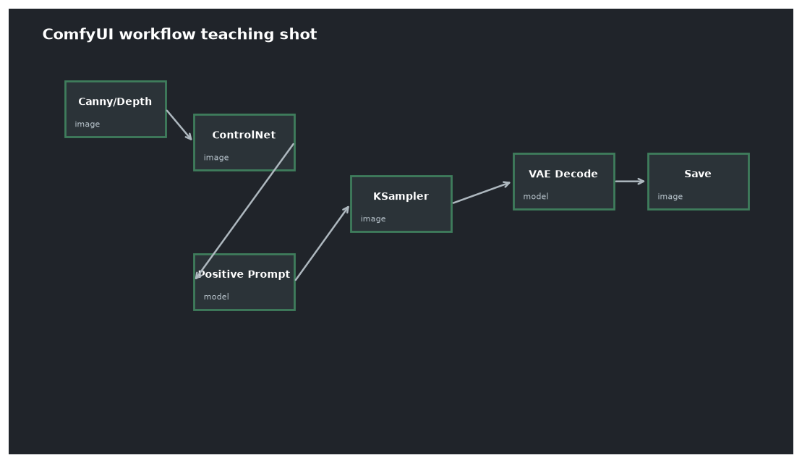

本讲目录
第 12 讲 · ControlNet 实战
原理在第 05 讲（冻结底模 + 可训练副本 + 零卷积），本讲接线开跑。你手里有一副好牌：Mac 上的 controlnet_aux 工具链已经能产 openpose/canny/depth/lineart_anime 四种条件图（之前 AIGC 工作流项目装好的），Win 这边只需把它们喂给第 10 讲下载的 union 模型。工作流对照
wf06_sdxl_controlnet.json。

1. 全链路：条件图从哪来，到哪去
ControlNet 的使用永远分两段：
【预处理段】参考图 ──(预处理器)──▶ 条件图(骨架/线稿/深度…)
【生成段】 条件图 + 提示词 ──(ControlNet + 底模)──▶ 成图
预处理有两个地方可做，你两者都有：
- Mac 侧（你现成的）：controlnet_aux 脚本批量出条件图 → 传到 Win 的
E:\AI\Inputs（scp/LocalSend 都行）。适合批量、适合你已调好的 MediaPipe 低阈值参数； - Win 侧（装节点后）：ComfyUI 里装
comfyui_controlnet_aux扩展节点包（第 15 讲讲怎么装），画布内直接 Load Image → 预处理器节点 → 条件图。适合单张即调即用。
起步阶段建议先走 Mac 侧——零新依赖就能开跑，也顺便验证两机传图通道。
2. 接线：ControlNet 串在"条件的水管"上
对照第 07 讲的骨架：LoRA 串在紫线（MODEL）上，ControlNet 串在橙线（CONDITIONING）上：
Load ControlNet Model (选 union promax)
│
CLIP Text Encode(正) ─▶ Apply ControlNet ─▶ KSampler positive
CLIP Text Encode(负) ─▶ (同一节点) ─▶ KSampler negative
Load Image(条件图) ──▶ ↑
用 Apply ControlNet（同时吃正负条件的版本），三个关键参数：
| 参数 | 含义 | 起手值 |
|---|---|---|
strength |
结构注入力度（第 05 讲副本输出的缩放） | 0.8 |
start_percent |
从第几成的去噪进度开始生效 | 0.0 |
end_percent |
到第几成停止生效 | 0.8 |
end_percent=0.8 的道理是第 03 讲的直接应用：构图在高噪声段定型，细节在低噪声段成形——让 ControlNet 管前 80% 步（锁住姿势构图），最后 20% 步撒手让模型自由发挥细节，图更自然。姿势总跑偏就升到 1.0，画面发僵就降 strength 或 end_percent。
union 模型是"多合一"：它按输入条件图的类型自动适配（部分版本配套 SetUnionControlNetType 节点手动指定 openpose/canny/depth——装好后看节点搜索里有没有，有就显式指定更稳）。
3. 四种条件图怎么选（你的工具链全覆盖）
| 条件类型 | 锁住什么 | 自由度 | 典型场景（VRChat 素材） |
|---|---|---|---|
| openpose | 只锁骨架关节 | 最高 | 主力：角色摆同款姿势换画风/换服装/换场景 |
| depth | 锁空间前后关系 | 中 | 保留场景层次重绘；人物体积感 |
| canny | 锁所有硬边缘 | 低 | 严格保形重绘（建筑、机械、logo） |
| lineart_anime | 锁动漫线稿 | 低-中 | 线稿上色、草图成图 |
自由度与控制力成反比——想让模型发挥就选 openpose，想严格照抄就选 canny。这也决定 strength 的手感：openpose 可以放心 0.9–1.0（只约束了骨架），canny 建议 0.5–0.8（满强度容易把参考图的一切细节都焊死）。
4. VRChat 素材的标准工作流（本讲的靶心）
把三讲的武器合成你的实际管线：
Mac: VRChat 截图 ──controlnet_aux──▶ openpose 骨架图 ──传──▶ E:\AI\Inputs
Win: wf06 = Illustrious 底模 + 角色/画风 LoRA(第11讲) + openpose ControlNet
提示词 = danbooru 标签描述角色外观(第10讲) + 触发词
→ 同一姿势 × 任意画风/服装/场景 的成图
要点两条：提示词仍要完整描述角色（骨架图里没有外观信息，长相靠提示词+LoRA 支撑）；批量生产时固定骨架图和种子、只扫提示词变体——你的"角色姿势库"从此可复用。
5. 排查树
完全不受条件图控制?
├─ strength 太低 / end_percent 太小
├─ union 模型没识别对类型 → 显式指定类型节点
└─ 条件图本身质量差 → 打开看一眼: 骨架断肢? 线稿全黑?
(Mac 侧 MediaPipe 对动漫脸的坑你已经踩过——低阈值)
控制过死、画面僵硬?
├─ strength 降到 0.6-0.8
├─ end_percent 降到 0.6-0.7
└─ canny 这类高约束条件 → 换 openpose/depth
姿势对了但人体比例怪?
└─ 骨架图与目标分辨率长宽比不一致 → 条件图先裁/缩到与 Empty Latent 同比例
上机任务
- 在 Mac 上给一张 VRChat 截图抽 openpose 骨架，传到
E:\AI\Inputs（顺便验证传图通道）； - 跑通
wf06：同一骨架 + 固定种子，换三套提示词（校服/盔甲/和服），确认"姿势锁定、内容自由"； - 固定一切，扫
end_percent= 0.5 / 0.8 / 1.0，体会"构图期 vs 细节期"的分界——这是第 03 讲噪声日程最直观的一次显形； - 同一张截图再抽 canny 跑一遍，与 openpose 版对比自由度差异。
姿势可控了，还差最后一块拼图：让"同一个角色"在不同图里长着同一张脸——下一讲 IP-Adapter 与角色一致性策略。